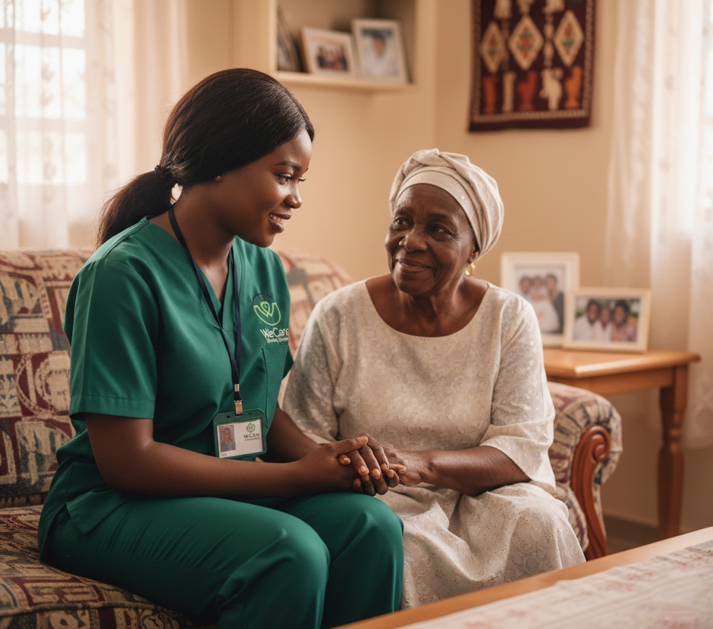

Live-In Care: Quality Support for Your Elderly Loved Ones
Imagine being a busy professional with a demanding job, yet your heart is always with your elderly parents. You worry constantly: Are they eating properly? Are they safe at home? Are they getting the attention and care they deserve? For many families, the challenge of providing consistent care without sacrificing careers or personal responsibilities is overwhelming.
WeCare Nursing Services recognized this growing challenge and designed a solution tailored for modern families — our Live-In Care program. Instead of forcing elderly loved ones to relocate or placing added strain on family members, our trained caregivers move directly into the client’s home, becoming part of the daily routine.
This approach allows elderly individuals to age comfortably in familiar surroundings while families maintain their work-life balance. There is no disruption, no loss of independence, and no emotional displacement — just consistent, professional care delivered where it matters most.
Our caregivers go beyond basic supervision. They provide medication management, daily health monitoring, companionship, and emotional support. Through trust and consistency, they build meaningful relationships that promote safety, dignity, and emotional well-being.
Every aspect of the Live-In Care program is guided by professionalism, empathy, and accountability. Families gain peace of mind knowing their loved ones are in capable hands, while elderly clients receive care that respects their dignity, independence, and comfort.